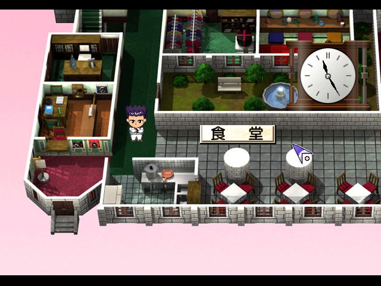
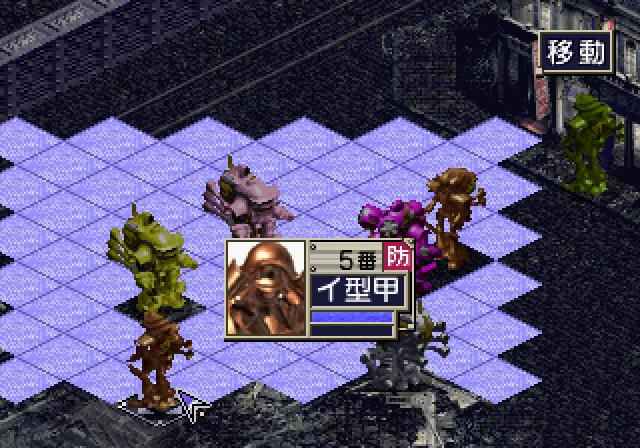

Beginner Tips
Early habits shape combat survival, 信頼度 thresholds, and late-game endings. Review these eight essentials before starting Episode 1 on Dreamcast so you avoid soft-locks, preserve battle rank points, and manage theater clock windows smoothly.
Eight Essential Habits
-
Import Sakura Wars 1 Clear Data first Keep your cleared サクラ大戦 file on the same ビジュアルメモリ when starting a new game. Selecting a cleared heroine in the opening 屋形船 prompt grants a dedicated greeting at the pier, a bonus room event in Episode 1, and extra dialogue in Episodes 6 and 10.
-
Separate Trust from Morale and Romance Episode 信頼度 resets at the end of each chapter and supplies immediate Attack, Defense, and Move bonuses in battle, whereas cumulative 恋愛度 carries across the whole campaign to decide the top four candidates in Episode 9.
-
Treat Time-Out as a real LIPS choice Letting the LIPS timer expire is an intentional fourth option. Several scenes reward silence with +1 or +2 信頼度, while others spawn or hide extra options during the second half of the timer bar.
-
Use Kinematron every Free Event for absent heroines Calling absent members on the キネマトロン costs 5 minutes per call and prevents 神崎すみれ, マリア・タチバナ, 李紅蘭, and 桐島カンナ from falling behind before they rejoin. Always follow up with the zero-minute fortune call at 14480.
-
Activate Protect on Turn 1 of every battle Assign かばう immediately on 大神一郎's first turn. It blocks three attacks on the chosen ally without hurting Ogami, raises that ally's trust when triggered, and keeps every pilot standing for the 優 war record rank.
-
Check the Visual Memory LCD before attacking On Dreamcast, hovering an attack over an enemy previews 確実, 可能, or 不可 on your ビジュアルメモリ screen. Pair units for 協力攻撃 when the readout shows 可能.
-
Play every story mini-game when it appears Attempting a mini-game during the main campaign registers it for replay inside 帝都の長い一日. Never skip クライマー・クライマー or any other challenge if you want full post-game access.
-
Maintain dedicated save anchors Keep permanent saves at the start of Episode 8, right before the Episode 9 クリスマス公演 lead selection, and before the Episode 11 squad split. This lets you view all eight endings and alternative squad scenes without replaying Disc 1.

